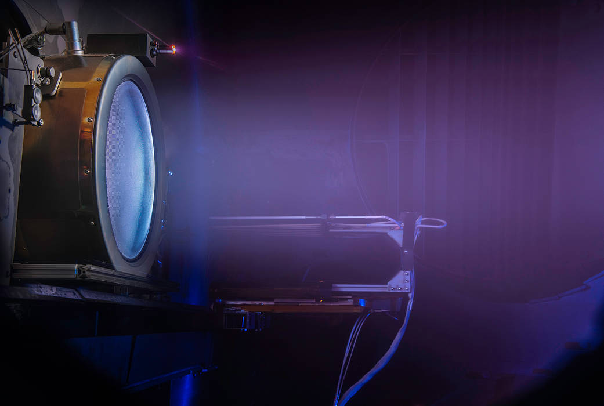
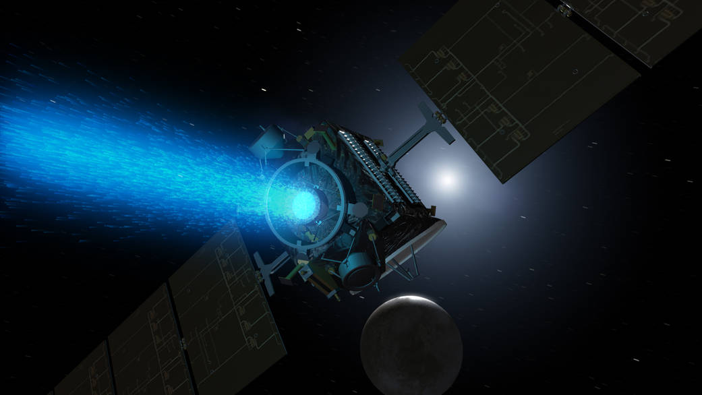

Before we look into the physics, it is important to acknowledge the history under which electrostatic thrusters were developed. Nearly all electric propulsion devices used today are electrostatic devices, meaning they use solely electric fields to accelerate charged particles for thrust.3 During the Cold War, the United States and Soviet Union began research on two such electrostatic thrusters: the gridded ion engine and the Hall-Effect thruster.4,5 While the United States began early theoretical research on the Hall-Effect thruster, its intrinsic plasma instabilities dissuaded further development efforts.7 The United States would go on to focus on the development of the gridded ion engine, while the Soviet Union would continue to research the Hall-Effect thruster.6
Gridded ion engines are highly efficient electric propulsion devices used on modern satellite platforms and several high profile missions.5,14 These ion engines have three characteristic features: an ionization chamber, accelerator grids, and a neutralizer.1 While each of these features varies from thruster to thruster, each variation serves the same purpose.
Use this 3D model to familiarize yourself with the gridded ion engine. The cross section feature allows you to see the inner components and workings of the thruster. You can also toggle the visibility of elements such as component labels, electromagnetic fields, and particles. The model itself was generated from a published schematic, and is proportioned after it rather than after any flown thruster.


The first stage of the gridded ion engine involves the ionization chamber, which ionizes neutral propellant atoms so that they can be propelled by the upcoming accelerator grids.8,9 Because ionization requires the electrons to have a certain amount of energy, ionization chambers are equipped with magnetic cusps that lengthen the path an electron travels before being collected by the inside walls of the thruster. This way, a given electron has more opportunities to ionize neutral propellant particles before it leaves the chamber.10
The second stage of the gridded ion engine provides the thrust of the engine through a strong electric field between accelerating grids. A voltage difference is applied between a screen grid and an accelerating grid placed a small distance apart, creating a strong electric field that accelerates incoming ions.1 However, there exists a limit on how many ions can be between the screen and accelerating grid: the more ions that exist there, the more incoming ions are repelled away.2,11
The third stage of the gridded ion engine neutralizes the ion beam expelled from the accelerating grids by emitting electrons that join the beam, creating an overall neutral jet of ions and electrons: a plasma jet.1 If the ion beam were not neutralized, the spacecraft would be left negatively charged, since all the positive charge has left via the jet.14